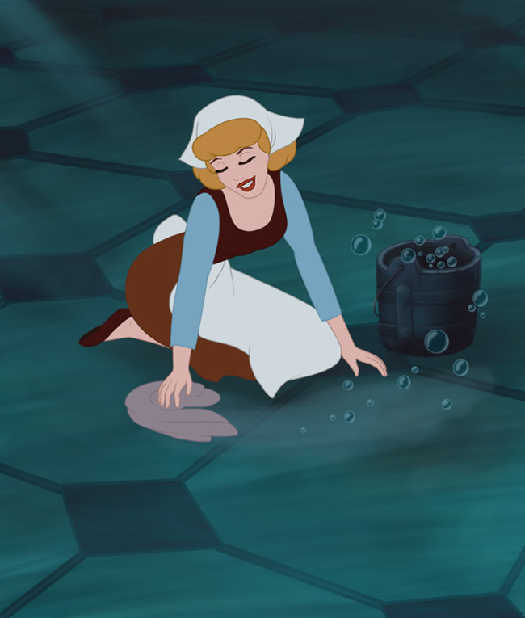

Minnie Mouse: Disney's Original Wonder Woman
-
The Mouse That Captured Our Hearts
Minnie is classy, cheerful, and feminine. She is filled with love and affection, sweet to nearly everyone she comes across, and can typically see the beauty in most things. Minnie's kindness and her good-natured spirit is what caused the world to fall for her.
-
Mickey's Gal Pal
Mickey couldn't be Mickey without Minnie. Minnie is portrayed as intelligent and sophisticated. Minnie often serves as the "voice-of-reason" amongst her friends, specifically in the series, “House of Mouse”. In this said series, Minnie has repeatedly taken charge of hectic situations, usually as a result of Mickey's inability to handle too much pressure, despite being the co-owner of the club. To her core, Minnie is a lover of life, her friends, and most significantly, Mickey Mouse, who serves not only as her partner, but also her best friend. Because she believes in the "true love" commonly found in fairy tales, Minnie is rather dreamy and whimsical. “Just imagine... He'll stride into the room; a light will glow from him. I'll hear music, he'll bring me flowers and he'll sweep me off my feet! And, I'll know he's the one when he makes me laugh.” In this quote, Minnie proves she is more than okay with being vulnerable, of being a hopeless romantic. She is unapologetically her, which wins not only Mickey’s heart, but ours as well.
-
Redefining Disney
Minnie Mouse will forever be tied to Disney. As one of Walt's earliest creations, Mickey and Minnie Mouse will forever be the household faces and names of Disney. The Disneyland experience would not be complete without our famous Mickey and Minnie duo greeting us with their big, welcoming grins and open arms. There is a reason they are the poster child for Disney. The world will never forget those iconic Mickey/Minnie ears.
Ariel: The Little Mermaid
-
The Little, But Not So Little, Mermaid
Our Little Mermaid, we know as Ariel, was introduced to us in 1989. She was popularized for being known as the young girl who was always curious and would sacrifice anything for freedom, for love. Ariel is a headstrong and determined, young mermaid. She is the youngest and prettiest princess of the sea but spends most of her time outside the palace walls of Atlantica singing, daydreaming, and adventuring with her best friend, Flounder, the guppy fish, and sometimes Sebastian, the crab, who is also the royal adviser to Ariel's father. At the age of 16, she unexpectedly becomes deeply infatuated with a young and handsome human prince named Eric and sacrifices all things dear to her for the chance of being with her one true love.
-
Part Of Her World
Ariel was rebellious amongst her sisters. She did not follow rules only because she wanted to explore the world around her. She wanted more. She wanted to keep reaching, even if the odds were against her. Ariel captured the hearts of many with her powerful, optimistic, and moving piece - "Part of Your World", performed by Jodi Benson. "Part of Your World" embodied everything Ariel stood for - a strong passion for adventure and exploration.
-
Little Girl, Big Heart
She was a bright, inquisitive, young lady who blazed the trail for many girls to keep wondering, to keep questioning, to keep learning, and to keep an open mind when it comes to the world and its intricate facets.
Megara: The Spunky, Underrated Heroine From Hercules
-

Independent Woman
In her youth, Megara, commonly known as Meg, was romantic and open to giving love. She deeply cherished the relationship she shared with her boyfriend, who one day lost his life. To save him, she sold her soul and offered servitude to Hades, God of the Underworld. Her boyfriend was revived, as agreed, but he heartlessly left Meg for another woman shortly thereafter. Since then, she's had trouble trusting others and finding the courage to love again. Having become jaded and cynical as a result of her past, Meg upheld her end of the bargain by assisting Hades in his quest to take over the cosmos. Hence, she portrayed a quick-witted, free-spirited, independent attitude. She was more than alright knowing she didn't need a man.
-

Moral Compass
Because of her trauma with men, Megara was sometimes cynical, snarky, and a bit weary of what people’s true intentions were, making her atypical and a bit non-traditional among Disney’s female leads. Maybe this is why she was underrated for so long. However, Meg does play enough of a heroic part in the film, ‘Hercules’, hence she is still classified as a heroine. She sacrificed her life after getting hurt the first time around, just to save Hercules. She did not allow what hurt her in the past to impale her judgment of character in her present. She still was able to do the right thing for the right people when it mattered.
-
I Won't Say I'm In Love
If you've seen the 1997 animated film, 'Hercules', you remember it for its soundtrack. Meg's heart and mind debate one another in her song, "I Won't Say I'm In Love", performed by Susan Egan. She struggles with herself, confused about how to confront her feelings for Hercules after being burned in the past. Eventually, she opens her heart up again and allows herself to love once more. Meg might not have been as compliant compared to most Disney gals, but in the end, she still wanted her Prince Charming. I mean, it was love that made her feel so deeply in the first place. She gave way for her heart to heal with someone new. She knew it was well worth it for the man who was worthy of receiving it.
Mulan: The Princess Warrior
-
Duty and Honor
At the start of the 1998 film, 'Mulan', Fa Mulan is introduced as a happy-go-lucky outcast, a clumsy girl who is unable to follow rules, regulations, or traditions. Despite this, she has a warm heart and wants nothing more than to uphold her family honor while keeping true to herself. Because of her society, however, this is difficult to accomplish and often brought chaos and embarrassment into her life. Therefore, Mulan was misunderstood for quite some time.
-
Family First
The driving force of Mulan's journey is the love she has for her father. When her father is drafted to serve in the Emperor's army, Mulan steals his scroll and reports to the camp in his place to protect him, as well as to satisfy her desire to prove her own self-worth. She was seen having difficulties with self-confidence, due to society's mistreatment towards her, as well as the pressures of the society she was born into - particularly in the lives of women. Early in the film, whenever she went against sexism and injustice, or simply handled a situation in her own, unique way, Mulan was greeted with anger or some form of annoyance from those around her, thus furthering her socially-awkward (yet lovable) attitude.
-
True To Herself
Mulan's song, performed by Lea Salonga, "Reflection", is quite apropos to Mulan's inner struggle. In the song, she questions why she is not seen as the "perfect daughter", the "perfect bride", basically, the perfect "woman". It is in this song, Mulan truly shows her audience that she hides her true self and was quite tired of it. She could no longer wait for a day when her reflection would show who she was inside. Therefore, she did something about it. She proved her worth. She fought valliantly and braved many obstacles. Mulan gave herself a reason to deserve being seen as the hero she is known as today.
Jasmine: The Humble at Heart
-
Wanting To Be Free
Disney's 'Aladdin' portrayed a beautiful, picture-perfect princess, Jasmine. She is seen as a rebellious and young princess from Agrabah, a Middle Eastern kingdom ruled by her father, the Sultan. As the future Sultana, Jasmine has a strong sense of obligation to her kingdom. Because of outdated laws, however, she was forbidden to go beyond the palace walls and forced to follow unjust practices. Refusing to be treated like a sheltered object, Jasmine aspires to diverge from her societal confines and have a life where she is free to make her own choices. Strong-willed and defiant, Jasmine was not afraid to speak her mind, nor did she ever hesitate to stand up for what she believes is right. Her open resentment towards Agrabah's outdated laws and her belief that people should be judged solely by their character rather than their background, shows that she is progressive and kind-hearted. This mentality allowed her to see the goodness in Aladdin, despite his background as a "street urchin".
-
A Tamer of Hearts
Jasmine was very close with a tiger named, Rajah. He was Jasmine's loyal, protective pet and best friend. Jasmine's heart was wild with lust for the unknown, Rajah's was tamed and subservient to Jasmine. Their relationship was beautiful. Jasmine should have been seen as the submissive princess, but she was the one challenging the status quo. Rajah should have been seen as a wild tiger, ferocious and fierce, yet he was the soft-hearted, loving companion to Jasmine. The personalities of the two definitely complemented one another, which made for a great addition to the film. We fall in love with Jasmine even more for her treatment to all creatures.
-
Not All That Glitters Is Gold
Because of her status as a princess, Jasmine was unfortunately forbidden to ever leave the palace walls, spending her life sheltered within the confines of the royal home. She often felt suffocated by the laws of her kingdom, which restricted her from socializing with her subjects and forced her to constantly meeting suitors to possibly arrange marriages. This situation ultimately prevented Jasmine from making any connections, as she had never had any real friends, aside from her tiger pal, Rajah, and left her with the desire to see the world. Jasmine wanted to experience life outside of being a sheltered princess, which would eventually result in meeting Aladdin. Here, the audience is taught that not everything that shines is always worth having.
Cinderella: The Pure
-

Yes, Ma'am
Despite being raised in toxicity and emotional abuse from her evil step-mother and step-sisters, Cinderella remained independent and strong-willed by exuding kind-hearted and self-loving traits, not allowing the bitterness surrounding her life to overtake her and morph her into someone as cruel as her stepfamily. She makes the most of her misfortunes by remaining optimistic of the possibilities of a brighter future, keeping herself preoccupied with enforced housework and friendly bonds built with her pets, mostly mice, who were also tormented by her family through the use of rat traps. But they were only rescued and spared by Cinderella. In gratitude, the mice would become loyal companions to Cinderella. The devotion of the mice would ultimately play a crucial role in the young woman escaping her abusive household, thus furthering the example of how Cinderella's evergreen kindness towards others, even the littlest of creatures, despite her situation, would ultimately lead to her uprising and being seen as the pure-hearted woman she is.
-
Kept To Herself
Cinderella was tormented constantly and had every reason to be very upset with her given circumstances. Her daily goal was to make the most of her situation, but she never forced herself to bottle up her true emotions in an unhealthy manner; instead, wisely keeping them under control, while also keeping in mind that the future holds brighter experiences. Cinderella found ways of bringing joy and light into her life through her friendships, her books, her singing, and even in her dutiful housework. Cinderella was the epitome of optimism and she had a way of uplifting her audience with her grace and charm. For this reason alone, Cinderella and what she embodies remains timeless.
-
Beautiful: Inside And Out
Cinderella was always beautiful. Cinderella was an extremely lovely, fair, charming, elegant, attractive, and stunning, young woman. So of course, the jealousy and envy of those around her wanted to make her feel like she was not these things. Cinderella never surrendered to her bullies. Her devotion and patience was tested throughout the film. But Cinderella remained pure, loving, and wholesome, regardless of what people, even those who claimed were her family, tried to make her feel. This is why Cinderella was granted a fairy godmother, to enhance what was already there. With the help of her pals and her fairy godmother, the world was able to finally see exactly what Cinderella always had - beauty. Inside AND out.
Pocahontas: Nature's Best Friend
-

Respect and Care For The World
Pocahontas is displayed as a noble and highly spiritual young woman. She expresses wisdom beyond her years and offers kindness and guidance to those around her. She loves her homeland, adventure, and all of nature. In the film, she appears to have shamanic powers since she was able to talk with nature, talk to spirits, empathize with animals, and understand unknown languages. She was shown to be a true friend and true defender of every single thing around her - from rock to creature.
-
Misunderstood
It is important to note that Jean-Jacques Rousseau's notion of the "noble savage" was an important inspiration for this fictionalized story of the important historical persona that is Pocahontas. For as can be seen in other information given below, the story presented in the 1995 animated film is not an accurate telling of her life. Rather, it is an examination of the above notion. However, this can be argued against. In her signature song, "Colors of the Wind", she sings, "You think I'm an ignorant savage. And you've been so many places, I guess it must be so. But still, I cannot see if the savage one is me. How can there be so much that you don't know? You don't know..." As such, even Disney's depiction of Pocahontas can be seen as someone much more complex and nuanced than Rosseau's "noble savage" archetype.
-
Lover Of All
In the film, Pocahontas encounters John Smith. At first, she doesn’t understand him, but somehow, after allowing him to open up to her, she accepts him with her heart. Overtime, they get to know each other, asking all sorts of questions about each other’s worlds, since they come from such different backgrounds. However, the conversation goes sour when he unintentionally reveals his prejudices toward Native Americans. She explains to him the beauty and importance of nature and respecting the Earth through the song, "Colors of the Wind”, performed by Judy Kuhn. This causes him to see the ill of his thoughts and possibly change his ways. Regardless, Pocahontas did not discriminate, instead, she disarmed her opposers with her accepting nature and optimistic view of the world around them.
Belle: The Free-Thinker
-

Beauty and Brains
Belle gained a significant amount of intelligence over the years due to her love of books, which provided her with an elevated vocabulary, an active imagination, and an open mind. She is very confident and outspoken in her opinions and seldom likes being told what to do. Despite all this, she doesn't have very many friends. Her smarts and free-thinking attitude make her stand out from her fellow townspeople, who regard her as a little odd behind her beauty. But to those who valued intellect and a kind heart, they saw Belle as the stellar example of the two.
-
Different Is Good
Belle is a free woman for her time. She resists being mistreated, undermined, humiliated, demeaned, or controlled by anyone, especially and specifically Gaston, a male antagonist in the film, “Beauty and the Beast”. She does not appear to be receptive to Gaston's description of marriage. Even when she agrees to live under the Beast's control, later in the film, she acts independently, still defying his rules. She is quite resolute when it comes to stating and upholding her opinions and maintaining her ideas. Even though Belle says that she dreams of adventure, she also states that she wishes for a friend who accepts her for who she is. This is because everyone in town criticizes her for doing her own thing and can't understand her, which makes her feel like she can't fit in. However, despite this, even when people give her a hard time, she never changes but comes to a better understanding of herself. This makes the biggest difference when she breaks the spell and charms the Beast just by being herself. Different is always good.
-
Optimist
Belle's personality transforms throughout the film. At first, she frequently dreams about a life of adventure and romance, not realizing that sometimes adventures might take a turn for the worse. As Belle begins to spend more time with the Beast and their relationship blossoms into a strong friendship, she begins to fall in love with him without realizing it. She finds hope and light amidst his ghastly appearance. By being her true self, she uncovers heart within the Beast, disarming even the strongest of spells, bringing him back to his true form. Her faith in the Beast throughout the entire film brought audiences around the world to tears, just by being optimistic and latching onto the little bit of hope she saw in him. Light always drives even the strongest of curses away.
Judy Hopps: The "Always Ready To Try" Bunny
-
Brave Little Bunny
You'd think a little bunny would be the first to run away from danger. Judy Hopps was the opposite. Ever since she was a little bunny, she always dreamed of becoming something that was beyond her wildest dreams. In her world, bunnies were the bottom of the food chain, seen as "prey". Judy aspired to be seen as an equal, regardless of her disadvantages and no matter what people said about her. She proved she was brave, heroic, and an energetic ball of spunk, no matter what was thrown at her.
-
Protect and Serve
Judy Hopps became an officer, proving her bullies and even her family wrong. The odds were against her, but her willingness to listen to her heart and her ambitions pushed her to fruition. She never gave up even when it was seemingly hard for her. She was the smallest in her cohort at the police academy and everyone was betting against her. Yet, Judy found a way to empower herself. She kept trying and never gave up. Her dedication to protecting and serving her city was boundless. Judy Hopps is a modern-day Disney go-getter.
-
Forgiving On All Fronts
In the film, 'Zootopia', what we admired most about Judy's character, other than her grit and drive, was that she was given the chance to confront one of her childhood bullies and took the high road. Gideon Grey, an antagonist in Judy's early childhood, tried to bully her and make her feel less than because she was merely "prey" and "predators eat prey". Gideon also went as far as to telling Judy she'd never be anything than what her "kind" (bunnies) do, which was carrot farming. Though Judy proved him and everyone else wrong, she remained humble when encountering him later on in the film. She accepts his apology, while understanding things happen and we are always allowed and deserving of a second chance. Judy is the definition of compassion, hard work, and resilience. Kudos to Disney for bringing this underdog (or underbunny, I should say) to life.